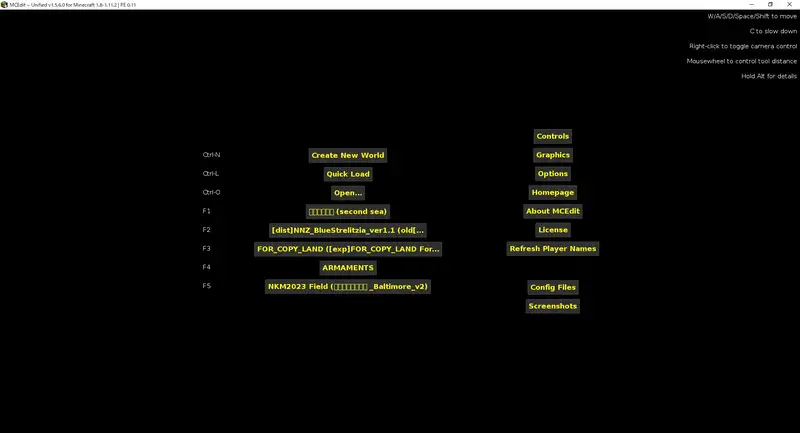
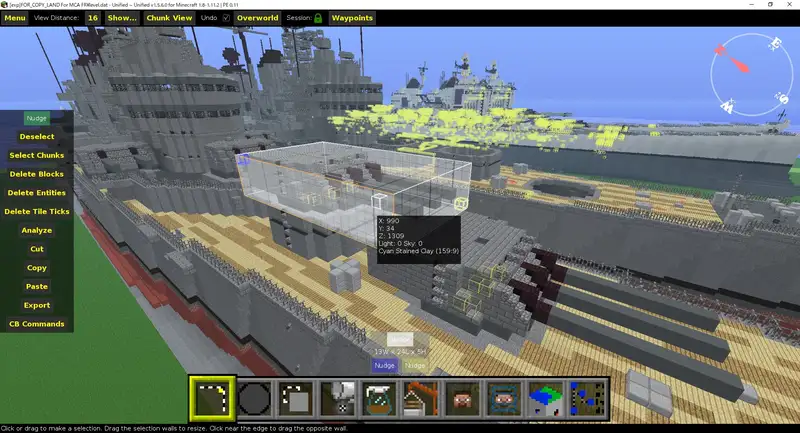
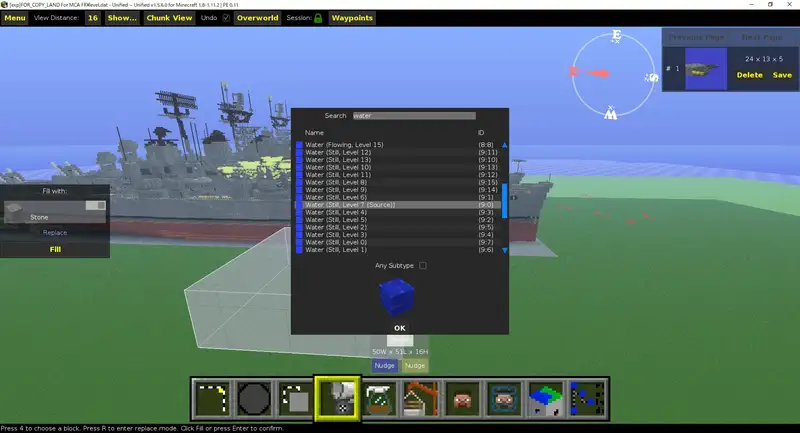

Minecraft向けの外部ツール「 MCEdit 」は、指定範囲のコピーアンドペーストや別のワールドとのインポート、及びエクスポートができるMODです。
MCEditにはver.1系列とver.2系列がありますが、今回紹介するのはver.1系列です。ver.2もすでに開発が止まっており、1と比較して機能上の利点もありませんので紹介しません。
我々軍事部民もよく使っていますが、それに限らず古いバージョンにMODを導入してMinecraftを遊んでいる様々な界隈でよく利用されているソフトウェアです。なお、最新版マイクラにはAMULETが使用できます。
なお、はりぼてエアクラフトでクラッシュしたときのワールドの修復や、 マインクラフトの作品をblenderで撮影する時の下準備にも使用します。
導入
まず以下のどちらかにアクセスし、Windows 32bitの物をダウンロードします (MACの方はMAC版) 。Windows 11 以降、64bit版のものは起動できません。
公式ホームページはこちらです。podshot.github.io/MCEdit-Unified/
公式GitHubはこちらです。 github.com/Podshot/MCEdit-Unified/releases/
ダウンロードされたのは自己解凍インストーラーです。ダブルクリックして実行します。
基本操作
まずソフトウェアを起動します。
ワールドを開く
Openをクリックしてワールドを選び、そのLevel.datファイルを開きます。
ワールドデータが見つからない方は、C:/ユーザー/（PCの名前）/AppData/Roaming/.minecraft/（作成したバージョンのプロファイル）/savesの順にクリックしてみてください。 このうちAppDataは一度エクスプローラーを起動して "表示" タブの中の隠しファイルにチェックを入れていないと見えませんので注意。
{kind=link}

移動と範囲選択
WASDで移動、ShiftとSpaceで上下移動。右クリックで視点を回転し、もう一度クリックで戻ります。また、いつでもドラッグで視点を回転できます。
範囲選択は、始点と終点をクリックするか、ドラッグします。さらに、選択範囲の面をドラッグして微調整できます。
左端にメニューが表示されています。これらの使い方を以下で解説します。
{kind=link}

その他
画面左上のメニューから、Undo、Redo、Save等の操作ができます。それにショートカットキーもそれぞれ Ctrl+Z, Ctrl+Y, Ctrl+Sとなります。
コピペ
Copy
範囲選択した後、 Copy ボタンを押します。
押すと画面右上にクリップボードの内容が表示され、続けて別のものをコピーすることも可能です。
Paste
Pasteボタンをクリックするとプレビューが現れます。地面等をクリックするとプレビューがその位置に固定され、ドラッグして微調整します。
位置を調節した後 Importボタンを押します。
Pasteするとき、元あったブロックと重なる場合は上書きされます。細かな挙動はチェックボックスで設定できます。
- Copy Air: 選択範囲の空気ブロックを貼付けます。貼付け先の範囲内に元々あったブロックは全て削除されます。
- Copy Water: 選択範囲の水ブロックを貼付けます。
{kind=link}
左上のメニューからOpenで別のワールドへの貼付けもできます。
移動・回転・反転
コピペの操作の応用で移動・回転・反転ができます。
移動（Cut & Paste）
範囲選択した後、 Cut ボタンを押します。
Paste ボタンをクリックするとプレビューが現れ、位置を調節した後 Import ボタンを押します。
1ブロックずつ移動
範囲選択した後、画面左メニューのNudgeボタンをクリックしながらWASD Shift Spase で1ブロックずつ移動できます。
反転
範囲選択した後、 Cut ボタンを押します。
Paste ボタンをクリックするとプレビューが現れ、 Mirror を押して反転させた後 Import ボタンを押します。
Mirror の反転軸は視点で変えられます。
回転
まず範囲選択した後、 Delete Entities を押してエンティティ（MOB等）を消します。でないとPaste時にエラーが出ます。
Cut ボタンを押します。
Paste ボタンをクリックするとプレビューが現れ、 Rotate を押して回転させた後 Import ボタンを押します。
リピーター等も正しく回転しますが、ドアの位置はズレます。

フィル・リプレース・スワップ
フィル
範囲選択し、画面下の Fill and Replace モード（バケツのマーク）をクリックします。
満たしたいブロックを選択して OK をクリックし、 Fill をクリックします。
水で満たしたい場合は、 Water (Still, Level 7 (Source)) を選択します。
{kind=link}

リプレース・スワップ
上記で Fill をクリックする前に、小さい Replace の文字をクリックします。
Findに消したいブロックを、Replaceに設置したいブロックを選択します。ブロック名をクリックすると選択可能になります。
他ワールドへのインポート・エクスポート
エクスポート
範囲選択した後、 Export ボタンを押します。
ファイル形式を .schematic に変更して、ファイル名を付けて保存します。
既定の保存先は ドキュメント/MCEdit/Schematics です。
インポート
画面下のモード選択から Import （クレーンの様なマーク）を押します。
ファイルを選択して開くをクリックし、Pasteと同じ要領で貼りつけます。
船をエクスポートする場合の手順
自分で作った船の作品を参加型イベントに出展する場合を想定して、手順を解説します。
私が主催したイベントでの出展方法でもMCEditを使っていただかなければなりませんし、他の方のイベントでも細部は違うものの必要となる場合がほとんどです。
- 新規フラットワールドを作成しておく
- 作成した船を コピー し、フラットワールドへ貼りつける（中心位置の判断のため範囲選択は最小限で）
- 貼りつけるとその範囲が選択されたままになるので、そのまま Delete Entities を実行し、目的の方角に 回転 させる（回転不要なら飛ばす）
- 回転後、喫水線下が水で満たされていなければ、 Replace を利用して満たす（喫水線位置の判断のため）※回路が流されないように注意
- 船全体を選択して、 .schematic 形式で Export する
- ワールドは保存しておき、マインクラフト内で動作確認をしておく（方角を変更すると回路の挙動が変わる可能性があるため）
注意点
- ワールドではなくスケマティックを開くこともできるが、この場合はエンティティを削除できない。
- 回路にMOBを使っている場合は注意。そもそも、MOBを使った回路設計自体が不安定なため、使わないのが望ましい